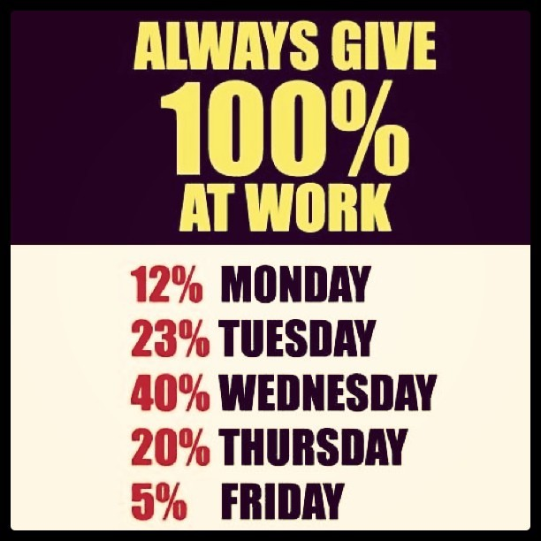

Tue, 09 Aug 2011 02:41:01 ·
aller au charbon taken with instagram at vvs

Aller au charbon (Taken with Instagram at VV’s Magical Land Of All Things Unplanned)
Tue, 09 Aug 2011 02:41:01 ·

Aller au charbon (Taken with Instagram at VV’s Magical Land Of All Things Unplanned)